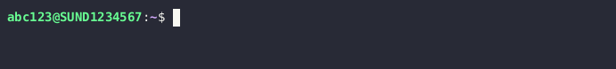

If have not already been granted access to the server, then please see the Accessing the cluster page before continuing!
Timeout while connecting to the cluster¶
You may experience timeout errors when you attempt to connect to the server:
Firstly verify that you are correctly connected to the KU network:
You must either use a wired connection while physically at CBMR.
Or you must connect via the KU VPN.
It is not possible to connect to using WIFI at CBMR nor is it possible to from outside of CBMR without the use of the VPN. See the official VPN documentation in Danish or English for more information.
If neither using a wired connection nor connecting the the KU VPN fixes the problem, you may need to create a support ticket to have KU IT permit you to connect to the server.
Login to the KU IT Serviceportal.
Click the
Create Ticket/Opret Sagbutton.Select the
Research IT/Forsknings-ITcategory.Then select the
Research Applications and Services/Forskningsapplikationer og Servicessubcategory.Finally, select
Consultancy and Support/Rådgivning og support.Write something like "SSH connection times out when attempting to connect to esrumhead01fl.unicph.domain" in the "Please describe" text-box and describe the steps you have taken to try to fix this problem: Tried wired connection at CBMR, tried VPN, etc.
Write "esrumhead01fl.unicph.domain" in the System name text-box.
Click the
Add to cartbutton.Click the
SUBMIT ORDERbutton.
Warning
If you are not an employee at CBMR you may not have permission to open a ticket as described above. In that case simply Contact us and we will forward your issue to KU-IT.
File uploads using MobaXterm never start¶
Please make sure that your session is configured to use the SCP
(enhanced speed) browser type. See step 4 in in the
Configuring MobaXterm section.
KU network-folders in ~/ucph are not available when using MobaXterm¶
Please make sure that you have disabled use of GSSAPI Kerberos as
described in the Configuring MobaXterm section.